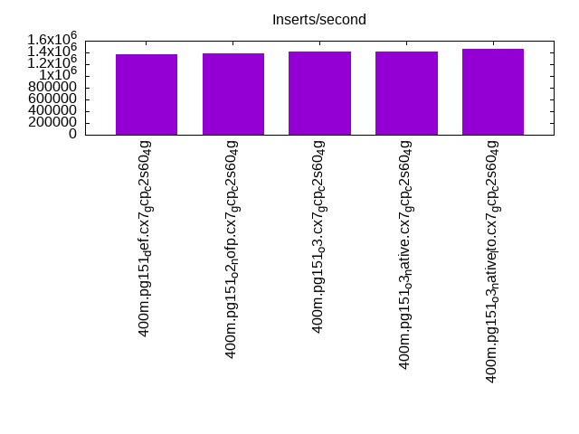
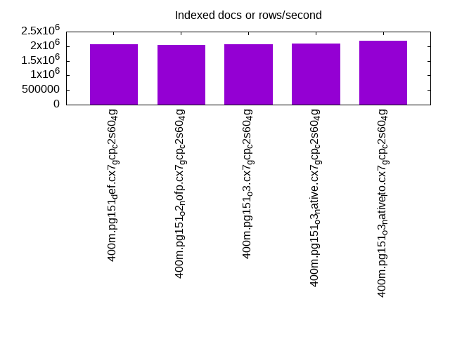
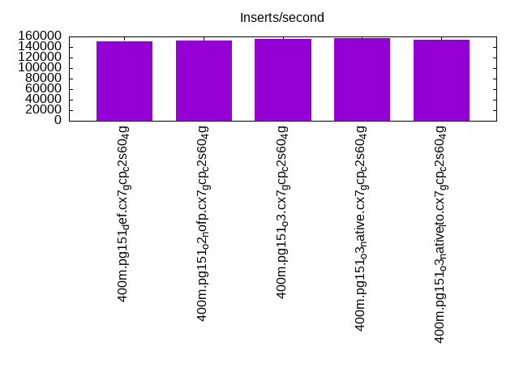
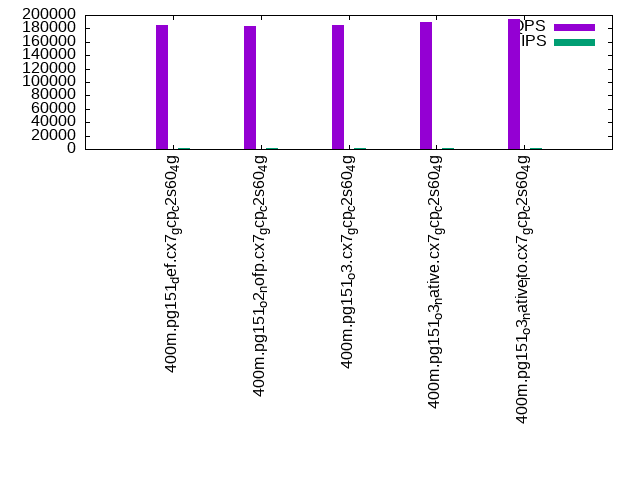
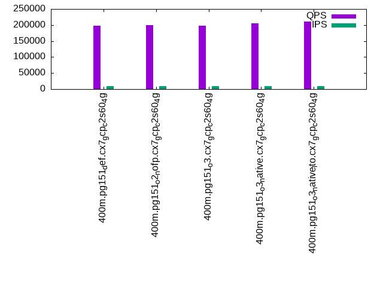

This is a report for the insert benchmark with 400M docs and 20 client(s). It is generated by scripts (bash, awk, sed) and Tufte might not be impressed. An overview of the insert benchmark is here and a short update is here. Below, by DBMS, I mean DBMS+version.config. An example is my8020.c10b40 where my means MySQL, 8020 is version 8.0.20 and c10b40 is the name for the configuration file.
The test server is c2-standard-60 from GCP with 30 cores, hyperthreads disabled, 240G RAM and 3T of NVMe (XFS with RAID0 over 8 devices). The benchmark was run with 20 clients and there were 1 or 2 connections per client (1 for queries, 1 for inserts). It uses 20 tables with a client per table. It loads 20M rows per table without secondary indexes, creates secondary indexes, loads another 20M rows per table then does 3 read+write tests for one hour each that do queries as fast as possible with 100, 500 and then 1000 writes/second/client concurrent with the queries. The database is cached by the OS but not by Postgres. Clients and the DBMS share one server. The per-database configs are in the per-database subdirectories here.
The tested DBMS are:
The numbers are inserts/s for l.i0 and l.i1, indexed docs (or rows) /s for l.x and queries/s for q*.2. The values are the average rate over the entire test for inserts (IPS) and queries (QPS). The range of values for IPS and QPS is split into 3 parts: bottom 25%, middle 50%, top 25%. Values in the bottom 25% have a red background, values in the top 25% have a green background and values in the middle have no color. A gray background is used for values that can be ignored because the DBMS did not sustain the target insert rate. Red backgrounds are not used when the minimum value is within 80% of the max value.
| dbms | l.i0 | l.x | l.i1 | q100.1 | q500.1 | q1000.1 |
|---|---|---|---|---|---|---|
| 400m.pg151_def.cx7_gcp_c2s60_4g | 1365188 | 2073057 | 150263 | 184653 | 198409 | 200198 |
| 400m.pg151_o2_nofp.cx7_gcp_c2s60_4g | 1379310 | 2041326 | 152672 | 184012 | 199807 | 200390 |
| 400m.pg151_o3.cx7_gcp_c2s60_4g | 1413428 | 2062371 | 155400 | 185219 | 198230 | 203504 |
| 400m.pg151_o3_native.cx7_gcp_c2s60_4g | 1418440 | 2094764 | 156617 | 189527 | 204372 | 205795 |
| 400m.pg151_o3_native_lto.cx7_gcp_c2s60_4g | 1454545 | 2198352 | 153315 | 193608 | 211192 | 214804 |
This table has relative throughput, throughput for the DBMS relative to the DBMS in the first line, using the absolute throughput from the previous table.
| dbms | l.i0 | l.x | l.i1 | q100.1 | q500.1 | q1000.1 |
|---|---|---|---|---|---|---|
| 400m.pg151_def.cx7_gcp_c2s60_4g | 1.00 | 1.00 | 1.00 | 1.00 | 1.00 | 1.00 |
| 400m.pg151_o2_nofp.cx7_gcp_c2s60_4g | 1.01 | 0.98 | 1.02 | 1.00 | 1.01 | 1.00 |
| 400m.pg151_o3.cx7_gcp_c2s60_4g | 1.04 | 0.99 | 1.03 | 1.00 | 1.00 | 1.02 |
| 400m.pg151_o3_native.cx7_gcp_c2s60_4g | 1.04 | 1.01 | 1.04 | 1.03 | 1.03 | 1.03 |
| 400m.pg151_o3_native_lto.cx7_gcp_c2s60_4g | 1.07 | 1.06 | 1.02 | 1.05 | 1.06 | 1.07 |
This lists the average rate of inserts/s for the tests that do inserts concurrent with queries. For such tests the query rate is listed in the table above. The read+write tests are setup so that the insert rate should match the target rate every second. Cells that are not at least 95% of the target have a red background to indicate a failure to satisfy the target.
| dbms | q100.1 | q500.1 | q1000.1 |
|---|---|---|---|
| pg151_def.cx7_gcp_c2s60_4g | 1976 | 9885 | 19769 |
| pg151_o2_nofp.cx7_gcp_c2s60_4g | 1976 | 9885 | 19769 |
| pg151_o3.cx7_gcp_c2s60_4g | 1976 | 9885 | 19769 |
| pg151_o3_native.cx7_gcp_c2s60_4g | 1976 | 9885 | 19769 |
| pg151_o3_native_lto.cx7_gcp_c2s60_4g | 1976 | 9885 | 19769 |
| target | 2000 | 10000 | 20000 |
l.i0: load without secondary indexes. Graphs for performance per 1-second interval are here.
Average throughput:
Insert response time histogram: each cell has the percentage of responses that take <= the time in the header and max is the max response time in seconds. For the max column values in the top 25% of the range have a red background and in the bottom 25% of the range have a green background. The red background is not used when the min value is within 80% of the max value.
| dbms | 256us | 1ms | 4ms | 16ms | 64ms | 256ms | 1s | 4s | 16s | gt | max |
|---|---|---|---|---|---|---|---|---|---|---|---|
| pg151_def.cx7_gcp_c2s60_4g | 59.850 | 39.040 | 1.050 | 0.019 | 0.034 | 0.007 | 0.569 | ||||
| pg151_o2_nofp.cx7_gcp_c2s60_4g | 60.855 | 37.999 | 1.082 | 0.034 | 0.022 | 0.007 | 0.692 | ||||
| pg151_o3.cx7_gcp_c2s60_4g | 62.581 | 36.369 | 0.987 | 0.030 | 0.023 | 0.010 | 0.626 | ||||
| pg151_o3_native.cx7_gcp_c2s60_4g | 61.527 | 37.396 | 1.019 | 0.027 | 0.023 | 0.007 | 0.635 | ||||
| pg151_o3_native_lto.cx7_gcp_c2s60_4g | 62.747 | 36.260 | 0.920 | 0.039 | 0.023 | 0.010 | 0.559 |
Performance metrics for the DBMS listed above. Some are normalized by throughput, others are not. Legend for results is here.
ips qps rps rmbps wps wmbps rpq rkbpq wpi wkbpi csps cpups cspq cpupq dbgb1 dbgb2 rss maxop p50 p99 tag 1365188 0 0 0.0 9773.4 576.4 0.000 0.000 0.007 0.432 235832 60.4 0.173 13 38.3 103.2 NA 0.569 76814 29581 400m.pg151_def.cx7_gcp_c2s60_4g 1379310 0 0 0.0 9820.3 577.9 0.000 0.000 0.007 0.429 220720 60.4 0.160 13 38.3 103.2 NA 0.692 76817 23873 400m.pg151_o2_nofp.cx7_gcp_c2s60_4g 1413428 0 0 0.0 10098.7 590.1 0.000 0.000 0.007 0.427 218612 60.5 0.155 13 38.3 103.2 NA 0.626 79612 14584 400m.pg151_o3.cx7_gcp_c2s60_4g 1418440 0 0 0.0 10125.7 592.2 0.000 0.000 0.007 0.428 229584 60.6 0.162 13 38.3 103.2 NA 0.635 78914 30567 400m.pg151_o3_native.cx7_gcp_c2s60_4g 1454545 0 0 0.0 10210.5 603.1 0.000 0.000 0.007 0.425 229062 59.7 0.157 12 38.3 103.2 NA 0.559 81410 19579 400m.pg151_o3_native_lto.cx7_gcp_c2s60_4g
l.x: create secondary indexes.
Average throughput:
Performance metrics for the DBMS listed above. Some are normalized by throughput, others are not. Legend for results is here.
ips qps rps rmbps wps wmbps rpq rkbpq wpi wkbpi csps cpups cspq cpupq dbgb1 dbgb2 rss maxop p50 p99 tag 2073057 0 0 0.0 7010.7 935.5 0.000 0.000 0.003 0.462 149695 22.1 0.072 3 73.5 195.0 NA 0.153 NA NA 400m.pg151_def.cx7_gcp_c2s60_4g 2041326 0 0 0.0 6851.1 932.6 0.000 0.000 0.003 0.468 148316 21.7 0.073 3 73.5 194.9 NA 0.219 NA NA 400m.pg151_o2_nofp.cx7_gcp_c2s60_4g 2062371 0 0 0.0 6792.1 905.3 0.000 0.000 0.003 0.450 145806 21.6 0.071 3 73.5 193.4 NA 0.159 NA NA 400m.pg151_o3.cx7_gcp_c2s60_4g 2094764 0 0 0.0 6697.1 930.4 0.000 0.000 0.003 0.455 146994 21.4 0.070 3 73.5 192.3 NA 0.056 NA NA 400m.pg151_o3_native.cx7_gcp_c2s60_4g 2198352 0 0 0.0 5809.6 895.1 0.000 0.000 0.003 0.417 117662 21.9 0.054 3 73.5 185.6 NA 0.051 NA NA 400m.pg151_o3_native_lto.cx7_gcp_c2s60_4g
l.i1: continue load after secondary indexes created. Graphs for performance per 1-second interval are here.
Average throughput:
Insert response time histogram: each cell has the percentage of responses that take <= the time in the header and max is the max response time in seconds. For the max column values in the top 25% of the range have a red background and in the bottom 25% of the range have a green background. The red background is not used when the min value is within 80% of the max value.
| dbms | 256us | 1ms | 4ms | 16ms | 64ms | 256ms | 1s | 4s | 16s | gt | max |
|---|---|---|---|---|---|---|---|---|---|---|---|
| pg151_def.cx7_gcp_c2s60_4g | 58.979 | 34.690 | 5.584 | 0.715 | 0.031 | nonzero | 1.058 | ||||
| pg151_o2_nofp.cx7_gcp_c2s60_4g | 58.476 | 35.608 | 5.184 | 0.708 | 0.024 | nonzero | 1.125 | ||||
| pg151_o3.cx7_gcp_c2s60_4g | 61.994 | 32.419 | 4.816 | 0.739 | 0.031 | 0.976 | |||||
| pg151_o3_native.cx7_gcp_c2s60_4g | 66.489 | 27.825 | 4.906 | 0.747 | 0.033 | 0.784 | |||||
| pg151_o3_native_lto.cx7_gcp_c2s60_4g | 65.608 | 28.218 | 5.416 | 0.725 | 0.033 | 0.962 |
Performance metrics for the DBMS listed above. Some are normalized by throughput, others are not. Legend for results is here.
ips qps rps rmbps wps wmbps rpq rkbpq wpi wkbpi csps cpups cspq cpupq dbgb1 dbgb2 rss maxop p50 p99 tag 150263 0 472 3.6 49403.8 1316.5 0.003 0.024 0.329 8.972 150492 41.1 1.002 82 163.3 304.0 NA 1.058 7592 899 400m.pg151_def.cx7_gcp_c2s60_4g 152672 0 363 3.0 47661.1 1310.9 0.002 0.020 0.312 8.793 154974 41.8 1.015 82 163.3 303.5 NA 1.125 7897 899 400m.pg151_o2_nofp.cx7_gcp_c2s60_4g 155400 0 311 3.7 46983.5 1309.7 0.002 0.024 0.302 8.630 146881 42.2 0.945 81 163.3 305.2 NA 0.976 7991 849 400m.pg151_o3.cx7_gcp_c2s60_4g 156617 0 322 3.5 47483.4 1308.3 0.002 0.023 0.303 8.554 157075 41.3 1.003 79 163.3 304.2 NA 0.784 8044 949 400m.pg151_o3_native.cx7_gcp_c2s60_4g 153315 0 554 3.3 48017.3 1314.6 0.004 0.022 0.313 8.780 166626 40.1 1.087 78 163.3 304.0 NA 0.962 7744 899 400m.pg151_o3_native_lto.cx7_gcp_c2s60_4g
q100.1: range queries with 100 insert/s per client. Graphs for performance per 1-second interval are here.
Average throughput:
Query response time histogram: each cell has the percentage of responses that take <= the time in the header and max is the max response time in seconds. For max values in the top 25% of the range have a red background and in the bottom 25% of the range have a green background. The red background is not used when the min value is within 80% of the max value.
| dbms | 256us | 1ms | 4ms | 16ms | 64ms | 256ms | 1s | 4s | 16s | gt | max |
|---|---|---|---|---|---|---|---|---|---|---|---|
| pg151_def.cx7_gcp_c2s60_4g | 99.933 | 0.058 | 0.008 | 0.001 | nonzero | nonzero | nonzero | 0.346 | |||
| pg151_o2_nofp.cx7_gcp_c2s60_4g | 99.932 | 0.059 | 0.008 | 0.001 | nonzero | nonzero | nonzero | 0.294 | |||
| pg151_o3.cx7_gcp_c2s60_4g | 99.952 | 0.040 | 0.008 | 0.001 | nonzero | nonzero | nonzero | 0.272 | |||
| pg151_o3_native.cx7_gcp_c2s60_4g | 99.951 | 0.040 | 0.007 | 0.001 | nonzero | nonzero | nonzero | 0.261 | |||
| pg151_o3_native_lto.cx7_gcp_c2s60_4g | 99.951 | 0.041 | 0.007 | 0.001 | nonzero | nonzero | nonzero | 0.372 |
Insert response time histogram: each cell has the percentage of responses that take <= the time in the header and max is the max response time in seconds. For max values in the top 25% of the range have a red background and in the bottom 25% of the range have a green background. The red background is not used when the min value is within 80% of the max value.
| dbms | 256us | 1ms | 4ms | 16ms | 64ms | 256ms | 1s | 4s | 16s | gt | max |
|---|---|---|---|---|---|---|---|---|---|---|---|
| pg151_def.cx7_gcp_c2s60_4g | 94.136 | 5.372 | 0.490 | 0.001 | 0.213 | ||||||
| pg151_o2_nofp.cx7_gcp_c2s60_4g | 96.275 | 3.250 | 0.475 | 0.039 | |||||||
| pg151_o3.cx7_gcp_c2s60_4g | 95.278 | 3.976 | 0.735 | 0.010 | 0.001 | 0.294 | |||||
| pg151_o3_native.cx7_gcp_c2s60_4g | 94.549 | 4.579 | 0.857 | 0.015 | 0.246 | ||||||
| pg151_o3_native_lto.cx7_gcp_c2s60_4g | 95.942 | 3.729 | 0.311 | 0.017 | 0.001 | 0.292 |
Performance metrics for the DBMS listed above. Some are normalized by throughput, others are not. Legend for results is here.
ips qps rps rmbps wps wmbps rpq rkbpq wpi wkbpi csps cpups cspq cpupq dbgb1 dbgb2 rss maxop p50 p99 tag 1976 184653 178 1.1 6288.7 73.2 0.001 0.006 3.183 37.949 657034 62.9 3.558 102 163.9 270.8 0.0 0.346 9162 8774 400m.pg151_def.cx7_gcp_c2s60_4g 1976 184012 237 1.5 6273.7 71.7 0.001 0.008 3.175 37.180 655577 62.8 3.563 102 163.9 266.3 0.0 0.294 9093 8662 400m.pg151_o2_nofp.cx7_gcp_c2s60_4g 1976 185219 116 0.9 6264.1 73.1 0.001 0.005 3.170 37.865 660946 63.1 3.568 102 163.9 267.3 0.0 0.272 9222 8838 400m.pg151_o3.cx7_gcp_c2s60_4g 1976 189527 139 0.9 6257.5 73.4 0.001 0.005 3.167 38.031 675428 62.9 3.564 100 163.9 264.5 0.0 0.261 9477 9062 400m.pg151_o3_native.cx7_gcp_c2s60_4g 1976 193608 161 1.0 6279.6 72.9 0.001 0.005 3.178 37.762 689550 62.7 3.562 97 163.9 264.6 0.0 0.372 9526 9142 400m.pg151_o3_native_lto.cx7_gcp_c2s60_4g
q500.1: range queries with 500 insert/s per client. Graphs for performance per 1-second interval are here.
Average throughput:
Query response time histogram: each cell has the percentage of responses that take <= the time in the header and max is the max response time in seconds. For max values in the top 25% of the range have a red background and in the bottom 25% of the range have a green background. The red background is not used when the min value is within 80% of the max value.
| dbms | 256us | 1ms | 4ms | 16ms | 64ms | 256ms | 1s | 4s | 16s | gt | max |
|---|---|---|---|---|---|---|---|---|---|---|---|
| pg151_def.cx7_gcp_c2s60_4g | 99.818 | 0.141 | 0.037 | 0.004 | nonzero | 0.060 | |||||
| pg151_o2_nofp.cx7_gcp_c2s60_4g | 99.809 | 0.149 | 0.038 | 0.004 | nonzero | 0.045 | |||||
| pg151_o3.cx7_gcp_c2s60_4g | 99.809 | 0.149 | 0.038 | 0.004 | nonzero | nonzero | 0.233 | ||||
| pg151_o3_native.cx7_gcp_c2s60_4g | 99.822 | 0.138 | 0.037 | 0.003 | nonzero | nonzero | 0.065 | ||||
| pg151_o3_native_lto.cx7_gcp_c2s60_4g | 99.830 | 0.130 | 0.036 | 0.003 | nonzero | nonzero | 0.094 |
Insert response time histogram: each cell has the percentage of responses that take <= the time in the header and max is the max response time in seconds. For max values in the top 25% of the range have a red background and in the bottom 25% of the range have a green background. The red background is not used when the min value is within 80% of the max value.
| dbms | 256us | 1ms | 4ms | 16ms | 64ms | 256ms | 1s | 4s | 16s | gt | max |
|---|---|---|---|---|---|---|---|---|---|---|---|
| pg151_def.cx7_gcp_c2s60_4g | 36.681 | 36.343 | 26.391 | 0.586 | 0.236 | ||||||
| pg151_o2_nofp.cx7_gcp_c2s60_4g | 34.969 | 37.348 | 27.134 | 0.549 | 0.202 | ||||||
| pg151_o3.cx7_gcp_c2s60_4g | 35.851 | 37.345 | 26.201 | 0.602 | 0.244 | ||||||
| pg151_o3_native.cx7_gcp_c2s60_4g | 35.548 | 36.889 | 26.981 | 0.582 | 0.208 | ||||||
| pg151_o3_native_lto.cx7_gcp_c2s60_4g | 35.132 | 36.447 | 27.806 | 0.616 | 0.247 |
Performance metrics for the DBMS listed above. Some are normalized by throughput, others are not. Legend for results is here.
ips qps rps rmbps wps wmbps rpq rkbpq wpi wkbpi csps cpups cspq cpupq dbgb1 dbgb2 rss maxop p50 p99 tag 9885 198409 5 0.0 29669.2 324.5 0.000 0.000 3.002 33.620 655833 64.9 3.305 98 167.5 253.5 0.0 0.060 9764 8746 400m.pg151_def.cx7_gcp_c2s60_4g 9885 199807 6 0.0 29617.7 327.4 0.000 0.000 2.996 33.916 657172 65.0 3.289 98 167.5 251.9 0.0 0.045 9882 8822 400m.pg151_o2_nofp.cx7_gcp_c2s60_4g 9885 198230 10 0.0 29685.6 327.6 0.000 0.000 3.003 33.941 657630 64.8 3.318 98 167.4 253.1 0.0 0.233 9785 8810 400m.pg151_o3.cx7_gcp_c2s60_4g 9885 204372 5 0.0 29556.2 326.3 0.000 0.000 2.990 33.800 674569 64.8 3.301 95 167.4 251.6 0.0 0.065 10042 9018 400m.pg151_o3_native.cx7_gcp_c2s60_4g 9885 211192 10 0.1 29498.3 327.4 0.000 0.000 2.984 33.919 694193 64.9 3.287 92 167.4 251.4 0.0 0.094 10293 9146 400m.pg151_o3_native_lto.cx7_gcp_c2s60_4g
q1000.1: range queries with 1000 insert/s per client. Graphs for performance per 1-second interval are here.
Average throughput:
Query response time histogram: each cell has the percentage of responses that take <= the time in the header and max is the max response time in seconds. For max values in the top 25% of the range have a red background and in the bottom 25% of the range have a green background. The red background is not used when the min value is within 80% of the max value.
| dbms | 256us | 1ms | 4ms | 16ms | 64ms | 256ms | 1s | 4s | 16s | gt | max |
|---|---|---|---|---|---|---|---|---|---|---|---|
| pg151_def.cx7_gcp_c2s60_4g | 99.434 | 0.447 | 0.108 | 0.011 | 0.001 | nonzero | 0.077 | ||||
| pg151_o2_nofp.cx7_gcp_c2s60_4g | 99.403 | 0.473 | 0.113 | 0.011 | 0.001 | nonzero | 0.073 | ||||
| pg151_o3.cx7_gcp_c2s60_4g | 99.425 | 0.455 | 0.109 | 0.011 | 0.001 | nonzero | 0.079 | ||||
| pg151_o3_native.cx7_gcp_c2s60_4g | 99.436 | 0.447 | 0.107 | 0.010 | 0.001 | nonzero | 0.080 | ||||
| pg151_o3_native_lto.cx7_gcp_c2s60_4g | 99.475 | 0.415 | 0.100 | 0.009 | 0.001 | nonzero | 0.077 |
Insert response time histogram: each cell has the percentage of responses that take <= the time in the header and max is the max response time in seconds. For max values in the top 25% of the range have a red background and in the bottom 25% of the range have a green background. The red background is not used when the min value is within 80% of the max value.
| dbms | 256us | 1ms | 4ms | 16ms | 64ms | 256ms | 1s | 4s | 16s | gt | max |
|---|---|---|---|---|---|---|---|---|---|---|---|
| pg151_def.cx7_gcp_c2s60_4g | 32.952 | 48.638 | 17.508 | 0.903 | 0.253 | ||||||
| pg151_o2_nofp.cx7_gcp_c2s60_4g | 29.516 | 51.217 | 18.369 | 0.895 | 0.003 | 0.311 | |||||
| pg151_o3.cx7_gcp_c2s60_4g | 29.909 | 50.346 | 18.802 | 0.943 | 0.220 | ||||||
| pg151_o3_native.cx7_gcp_c2s60_4g | 29.577 | 50.243 | 19.305 | 0.876 | 0.236 | ||||||
| pg151_o3_native_lto.cx7_gcp_c2s60_4g | 29.946 | 50.558 | 18.626 | 0.870 | 0.250 |
Performance metrics for the DBMS listed above. Some are normalized by throughput, others are not. Legend for results is here.
ips qps rps rmbps wps wmbps rpq rkbpq wpi wkbpi csps cpups cspq cpupq dbgb1 dbgb2 rss maxop p50 p99 tag 19769 200198 88 0.5 53005.6 567.2 0.000 0.003 2.681 29.380 632013 66.4 3.157 100 179.6 275.0 0.0 0.077 9845 8375 400m.pg151_def.cx7_gcp_c2s60_4g 19769 200390 91 0.6 52982.9 572.7 0.000 0.003 2.680 29.666 629902 66.3 3.143 99 179.6 275.0 0.0 0.073 9941 8407 400m.pg151_o2_nofp.cx7_gcp_c2s60_4g 19769 203504 55 0.3 53033.1 573.3 0.000 0.002 2.683 29.694 639120 66.3 3.141 98 179.6 275.1 0.0 0.079 10021 8474 400m.pg151_o3.cx7_gcp_c2s60_4g 19769 205795 59 0.3 53169.4 573.8 0.000 0.001 2.689 29.719 650494 66.2 3.161 97 179.6 275.0 0.0 0.080 10185 8726 400m.pg151_o3_native.cx7_gcp_c2s60_4g 19769 214804 79 0.5 53224.3 574.5 0.000 0.002 2.692 29.760 674123 66.2 3.138 92 179.6 275.1 0.0 0.077 10617 8954 400m.pg151_o3_native_lto.cx7_gcp_c2s60_4g
l.i0: load without secondary indexes
Performance metrics for all DBMS, not just the ones listed above. Some are normalized by throughput, others are not. Legend for results is here.
ips qps rps rmbps wps wmbps rpq rkbpq wpi wkbpi csps cpups cspq cpupq dbgb1 dbgb2 rss maxop p50 p99 tag 1365188 0 0 0.0 9773.4 576.4 0.000 0.000 0.007 0.432 235832 60.4 0.173 13 38.3 103.2 NA 0.569 76814 29581 400m.pg151_def.cx7_gcp_c2s60_4g 1379310 0 0 0.0 9820.3 577.9 0.000 0.000 0.007 0.429 220720 60.4 0.160 13 38.3 103.2 NA 0.692 76817 23873 400m.pg151_o2_nofp.cx7_gcp_c2s60_4g 1413428 0 0 0.0 10098.7 590.1 0.000 0.000 0.007 0.427 218612 60.5 0.155 13 38.3 103.2 NA 0.626 79612 14584 400m.pg151_o3.cx7_gcp_c2s60_4g 1418440 0 0 0.0 10125.7 592.2 0.000 0.000 0.007 0.428 229584 60.6 0.162 13 38.3 103.2 NA 0.635 78914 30567 400m.pg151_o3_native.cx7_gcp_c2s60_4g 1454545 0 0 0.0 10210.5 603.1 0.000 0.000 0.007 0.425 229062 59.7 0.157 12 38.3 103.2 NA 0.559 81410 19579 400m.pg151_o3_native_lto.cx7_gcp_c2s60_4g
l.x: create secondary indexes
Performance metrics for all DBMS, not just the ones listed above. Some are normalized by throughput, others are not. Legend for results is here.
ips qps rps rmbps wps wmbps rpq rkbpq wpi wkbpi csps cpups cspq cpupq dbgb1 dbgb2 rss maxop p50 p99 tag 2073057 0 0 0.0 7010.7 935.5 0.000 0.000 0.003 0.462 149695 22.1 0.072 3 73.5 195.0 NA 0.153 NA NA 400m.pg151_def.cx7_gcp_c2s60_4g 2041326 0 0 0.0 6851.1 932.6 0.000 0.000 0.003 0.468 148316 21.7 0.073 3 73.5 194.9 NA 0.219 NA NA 400m.pg151_o2_nofp.cx7_gcp_c2s60_4g 2062371 0 0 0.0 6792.1 905.3 0.000 0.000 0.003 0.450 145806 21.6 0.071 3 73.5 193.4 NA 0.159 NA NA 400m.pg151_o3.cx7_gcp_c2s60_4g 2094764 0 0 0.0 6697.1 930.4 0.000 0.000 0.003 0.455 146994 21.4 0.070 3 73.5 192.3 NA 0.056 NA NA 400m.pg151_o3_native.cx7_gcp_c2s60_4g 2198352 0 0 0.0 5809.6 895.1 0.000 0.000 0.003 0.417 117662 21.9 0.054 3 73.5 185.6 NA 0.051 NA NA 400m.pg151_o3_native_lto.cx7_gcp_c2s60_4g
l.i1: continue load after secondary indexes created
Performance metrics for all DBMS, not just the ones listed above. Some are normalized by throughput, others are not. Legend for results is here.
ips qps rps rmbps wps wmbps rpq rkbpq wpi wkbpi csps cpups cspq cpupq dbgb1 dbgb2 rss maxop p50 p99 tag 150263 0 472 3.6 49403.8 1316.5 0.003 0.024 0.329 8.972 150492 41.1 1.002 82 163.3 304.0 NA 1.058 7592 899 400m.pg151_def.cx7_gcp_c2s60_4g 152672 0 363 3.0 47661.1 1310.9 0.002 0.020 0.312 8.793 154974 41.8 1.015 82 163.3 303.5 NA 1.125 7897 899 400m.pg151_o2_nofp.cx7_gcp_c2s60_4g 155400 0 311 3.7 46983.5 1309.7 0.002 0.024 0.302 8.630 146881 42.2 0.945 81 163.3 305.2 NA 0.976 7991 849 400m.pg151_o3.cx7_gcp_c2s60_4g 156617 0 322 3.5 47483.4 1308.3 0.002 0.023 0.303 8.554 157075 41.3 1.003 79 163.3 304.2 NA 0.784 8044 949 400m.pg151_o3_native.cx7_gcp_c2s60_4g 153315 0 554 3.3 48017.3 1314.6 0.004 0.022 0.313 8.780 166626 40.1 1.087 78 163.3 304.0 NA 0.962 7744 899 400m.pg151_o3_native_lto.cx7_gcp_c2s60_4g
q100.1: range queries with 100 insert/s per client
Performance metrics for all DBMS, not just the ones listed above. Some are normalized by throughput, others are not. Legend for results is here.
ips qps rps rmbps wps wmbps rpq rkbpq wpi wkbpi csps cpups cspq cpupq dbgb1 dbgb2 rss maxop p50 p99 tag 1976 184653 178 1.1 6288.7 73.2 0.001 0.006 3.183 37.949 657034 62.9 3.558 102 163.9 270.8 0.0 0.346 9162 8774 400m.pg151_def.cx7_gcp_c2s60_4g 1976 184012 237 1.5 6273.7 71.7 0.001 0.008 3.175 37.180 655577 62.8 3.563 102 163.9 266.3 0.0 0.294 9093 8662 400m.pg151_o2_nofp.cx7_gcp_c2s60_4g 1976 185219 116 0.9 6264.1 73.1 0.001 0.005 3.170 37.865 660946 63.1 3.568 102 163.9 267.3 0.0 0.272 9222 8838 400m.pg151_o3.cx7_gcp_c2s60_4g 1976 189527 139 0.9 6257.5 73.4 0.001 0.005 3.167 38.031 675428 62.9 3.564 100 163.9 264.5 0.0 0.261 9477 9062 400m.pg151_o3_native.cx7_gcp_c2s60_4g 1976 193608 161 1.0 6279.6 72.9 0.001 0.005 3.178 37.762 689550 62.7 3.562 97 163.9 264.6 0.0 0.372 9526 9142 400m.pg151_o3_native_lto.cx7_gcp_c2s60_4g
q500.1: range queries with 500 insert/s per client
Performance metrics for all DBMS, not just the ones listed above. Some are normalized by throughput, others are not. Legend for results is here.
ips qps rps rmbps wps wmbps rpq rkbpq wpi wkbpi csps cpups cspq cpupq dbgb1 dbgb2 rss maxop p50 p99 tag 9885 198409 5 0.0 29669.2 324.5 0.000 0.000 3.002 33.620 655833 64.9 3.305 98 167.5 253.5 0.0 0.060 9764 8746 400m.pg151_def.cx7_gcp_c2s60_4g 9885 199807 6 0.0 29617.7 327.4 0.000 0.000 2.996 33.916 657172 65.0 3.289 98 167.5 251.9 0.0 0.045 9882 8822 400m.pg151_o2_nofp.cx7_gcp_c2s60_4g 9885 198230 10 0.0 29685.6 327.6 0.000 0.000 3.003 33.941 657630 64.8 3.318 98 167.4 253.1 0.0 0.233 9785 8810 400m.pg151_o3.cx7_gcp_c2s60_4g 9885 204372 5 0.0 29556.2 326.3 0.000 0.000 2.990 33.800 674569 64.8 3.301 95 167.4 251.6 0.0 0.065 10042 9018 400m.pg151_o3_native.cx7_gcp_c2s60_4g 9885 211192 10 0.1 29498.3 327.4 0.000 0.000 2.984 33.919 694193 64.9 3.287 92 167.4 251.4 0.0 0.094 10293 9146 400m.pg151_o3_native_lto.cx7_gcp_c2s60_4g
q1000.1: range queries with 1000 insert/s per client
Performance metrics for all DBMS, not just the ones listed above. Some are normalized by throughput, others are not. Legend for results is here.
ips qps rps rmbps wps wmbps rpq rkbpq wpi wkbpi csps cpups cspq cpupq dbgb1 dbgb2 rss maxop p50 p99 tag 19769 200198 88 0.5 53005.6 567.2 0.000 0.003 2.681 29.380 632013 66.4 3.157 100 179.6 275.0 0.0 0.077 9845 8375 400m.pg151_def.cx7_gcp_c2s60_4g 19769 200390 91 0.6 52982.9 572.7 0.000 0.003 2.680 29.666 629902 66.3 3.143 99 179.6 275.0 0.0 0.073 9941 8407 400m.pg151_o2_nofp.cx7_gcp_c2s60_4g 19769 203504 55 0.3 53033.1 573.3 0.000 0.002 2.683 29.694 639120 66.3 3.141 98 179.6 275.1 0.0 0.079 10021 8474 400m.pg151_o3.cx7_gcp_c2s60_4g 19769 205795 59 0.3 53169.4 573.8 0.000 0.001 2.689 29.719 650494 66.2 3.161 97 179.6 275.0 0.0 0.080 10185 8726 400m.pg151_o3_native.cx7_gcp_c2s60_4g 19769 214804 79 0.5 53224.3 574.5 0.000 0.002 2.692 29.760 674123 66.2 3.138 92 179.6 275.1 0.0 0.077 10617 8954 400m.pg151_o3_native_lto.cx7_gcp_c2s60_4g
Insert response time histogram
256us 1ms 4ms 16ms 64ms 256ms 1s 4s 16s gt max tag 0.000 59.850 39.040 1.050 0.019 0.034 0.007 0.000 0.000 0.000 0.569 pg151_def.cx7_gcp_c2s60_4g 0.000 60.855 37.999 1.082 0.034 0.022 0.007 0.000 0.000 0.000 0.692 pg151_o2_nofp.cx7_gcp_c2s60_4g 0.000 62.581 36.369 0.987 0.030 0.023 0.010 0.000 0.000 0.000 0.626 pg151_o3.cx7_gcp_c2s60_4g 0.000 61.527 37.396 1.019 0.027 0.023 0.007 0.000 0.000 0.000 0.635 pg151_o3_native.cx7_gcp_c2s60_4g 0.000 62.747 36.260 0.920 0.039 0.023 0.010 0.000 0.000 0.000 0.559 pg151_o3_native_lto.cx7_gcp_c2s60_4g
TODO - determine whether there is data for create index response time
Insert response time histogram
256us 1ms 4ms 16ms 64ms 256ms 1s 4s 16s gt max tag 0.000 0.000 58.979 34.690 5.584 0.715 0.031 nonzero 0.000 0.000 1.058 pg151_def.cx7_gcp_c2s60_4g 0.000 0.000 58.476 35.608 5.184 0.708 0.024 nonzero 0.000 0.000 1.125 pg151_o2_nofp.cx7_gcp_c2s60_4g 0.000 0.000 61.994 32.419 4.816 0.739 0.031 0.000 0.000 0.000 0.976 pg151_o3.cx7_gcp_c2s60_4g 0.000 0.000 66.489 27.825 4.906 0.747 0.033 0.000 0.000 0.000 0.784 pg151_o3_native.cx7_gcp_c2s60_4g 0.000 0.000 65.608 28.218 5.416 0.725 0.033 0.000 0.000 0.000 0.962 pg151_o3_native_lto.cx7_gcp_c2s60_4g
Query response time histogram
256us 1ms 4ms 16ms 64ms 256ms 1s 4s 16s gt max tag 99.933 0.058 0.008 0.001 nonzero nonzero nonzero 0.000 0.000 0.000 0.346 pg151_def.cx7_gcp_c2s60_4g 99.932 0.059 0.008 0.001 nonzero nonzero nonzero 0.000 0.000 0.000 0.294 pg151_o2_nofp.cx7_gcp_c2s60_4g 99.952 0.040 0.008 0.001 nonzero nonzero nonzero 0.000 0.000 0.000 0.272 pg151_o3.cx7_gcp_c2s60_4g 99.951 0.040 0.007 0.001 nonzero nonzero nonzero 0.000 0.000 0.000 0.261 pg151_o3_native.cx7_gcp_c2s60_4g 99.951 0.041 0.007 0.001 nonzero nonzero nonzero 0.000 0.000 0.000 0.372 pg151_o3_native_lto.cx7_gcp_c2s60_4g
Insert response time histogram
256us 1ms 4ms 16ms 64ms 256ms 1s 4s 16s gt max tag 0.000 0.000 94.136 5.372 0.490 0.001 0.000 0.000 0.000 0.000 0.213 pg151_def.cx7_gcp_c2s60_4g 0.000 0.000 96.275 3.250 0.475 0.000 0.000 0.000 0.000 0.000 0.039 pg151_o2_nofp.cx7_gcp_c2s60_4g 0.000 0.000 95.278 3.976 0.735 0.010 0.001 0.000 0.000 0.000 0.294 pg151_o3.cx7_gcp_c2s60_4g 0.000 0.000 94.549 4.579 0.857 0.015 0.000 0.000 0.000 0.000 0.246 pg151_o3_native.cx7_gcp_c2s60_4g 0.000 0.000 95.942 3.729 0.311 0.017 0.001 0.000 0.000 0.000 0.292 pg151_o3_native_lto.cx7_gcp_c2s60_4g
Query response time histogram
256us 1ms 4ms 16ms 64ms 256ms 1s 4s 16s gt max tag 99.818 0.141 0.037 0.004 nonzero 0.000 0.000 0.000 0.000 0.000 0.060 pg151_def.cx7_gcp_c2s60_4g 99.809 0.149 0.038 0.004 nonzero 0.000 0.000 0.000 0.000 0.000 0.045 pg151_o2_nofp.cx7_gcp_c2s60_4g 99.809 0.149 0.038 0.004 nonzero nonzero 0.000 0.000 0.000 0.000 0.233 pg151_o3.cx7_gcp_c2s60_4g 99.822 0.138 0.037 0.003 nonzero nonzero 0.000 0.000 0.000 0.000 0.065 pg151_o3_native.cx7_gcp_c2s60_4g 99.830 0.130 0.036 0.003 nonzero nonzero 0.000 0.000 0.000 0.000 0.094 pg151_o3_native_lto.cx7_gcp_c2s60_4g
Insert response time histogram
256us 1ms 4ms 16ms 64ms 256ms 1s 4s 16s gt max tag 0.000 0.000 36.681 36.343 26.391 0.586 0.000 0.000 0.000 0.000 0.236 pg151_def.cx7_gcp_c2s60_4g 0.000 0.000 34.969 37.348 27.134 0.549 0.000 0.000 0.000 0.000 0.202 pg151_o2_nofp.cx7_gcp_c2s60_4g 0.000 0.000 35.851 37.345 26.201 0.602 0.000 0.000 0.000 0.000 0.244 pg151_o3.cx7_gcp_c2s60_4g 0.000 0.000 35.548 36.889 26.981 0.582 0.000 0.000 0.000 0.000 0.208 pg151_o3_native.cx7_gcp_c2s60_4g 0.000 0.000 35.132 36.447 27.806 0.616 0.000 0.000 0.000 0.000 0.247 pg151_o3_native_lto.cx7_gcp_c2s60_4g
Query response time histogram
256us 1ms 4ms 16ms 64ms 256ms 1s 4s 16s gt max tag 99.434 0.447 0.108 0.011 0.001 nonzero 0.000 0.000 0.000 0.000 0.077 pg151_def.cx7_gcp_c2s60_4g 99.403 0.473 0.113 0.011 0.001 nonzero 0.000 0.000 0.000 0.000 0.073 pg151_o2_nofp.cx7_gcp_c2s60_4g 99.425 0.455 0.109 0.011 0.001 nonzero 0.000 0.000 0.000 0.000 0.079 pg151_o3.cx7_gcp_c2s60_4g 99.436 0.447 0.107 0.010 0.001 nonzero 0.000 0.000 0.000 0.000 0.080 pg151_o3_native.cx7_gcp_c2s60_4g 99.475 0.415 0.100 0.009 0.001 nonzero 0.000 0.000 0.000 0.000 0.077 pg151_o3_native_lto.cx7_gcp_c2s60_4g
Insert response time histogram
256us 1ms 4ms 16ms 64ms 256ms 1s 4s 16s gt max tag 0.000 0.000 32.952 48.638 17.508 0.903 0.000 0.000 0.000 0.000 0.253 pg151_def.cx7_gcp_c2s60_4g 0.000 0.000 29.516 51.217 18.369 0.895 0.003 0.000 0.000 0.000 0.311 pg151_o2_nofp.cx7_gcp_c2s60_4g 0.000 0.000 29.909 50.346 18.802 0.943 0.000 0.000 0.000 0.000 0.220 pg151_o3.cx7_gcp_c2s60_4g 0.000 0.000 29.577 50.243 19.305 0.876 0.000 0.000 0.000 0.000 0.236 pg151_o3_native.cx7_gcp_c2s60_4g 0.000 0.000 29.946 50.558 18.626 0.870 0.000 0.000 0.000 0.000 0.250 pg151_o3_native_lto.cx7_gcp_c2s60_4g